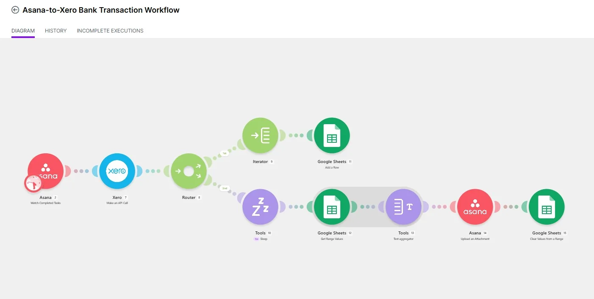
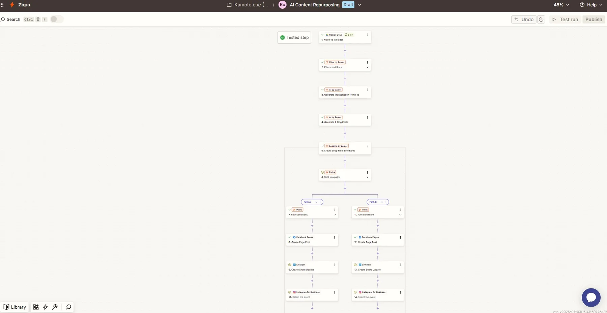
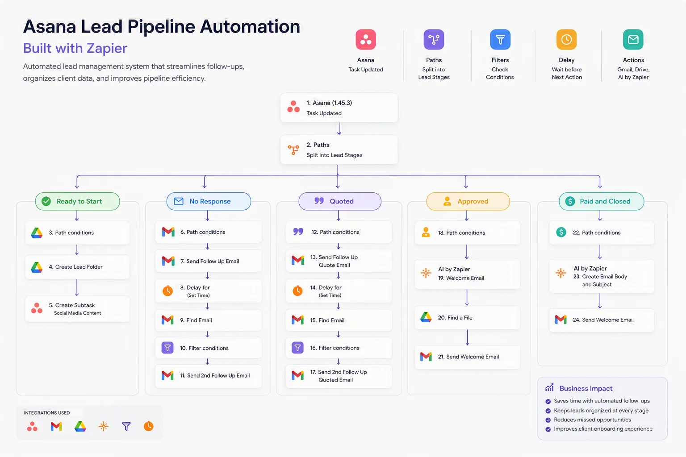
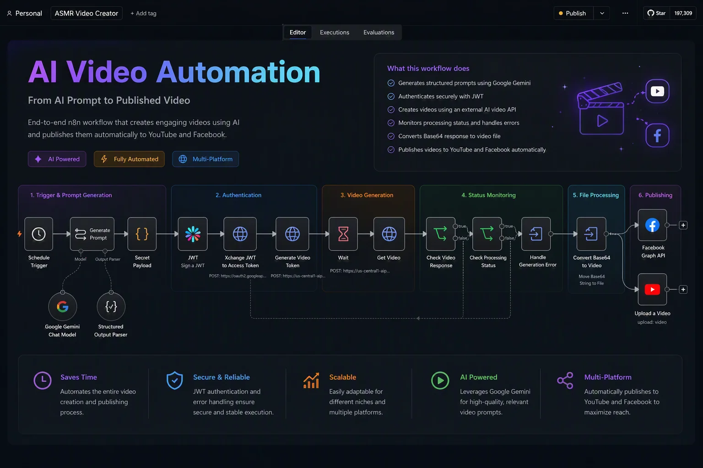
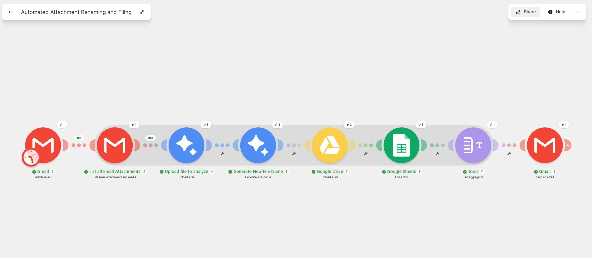
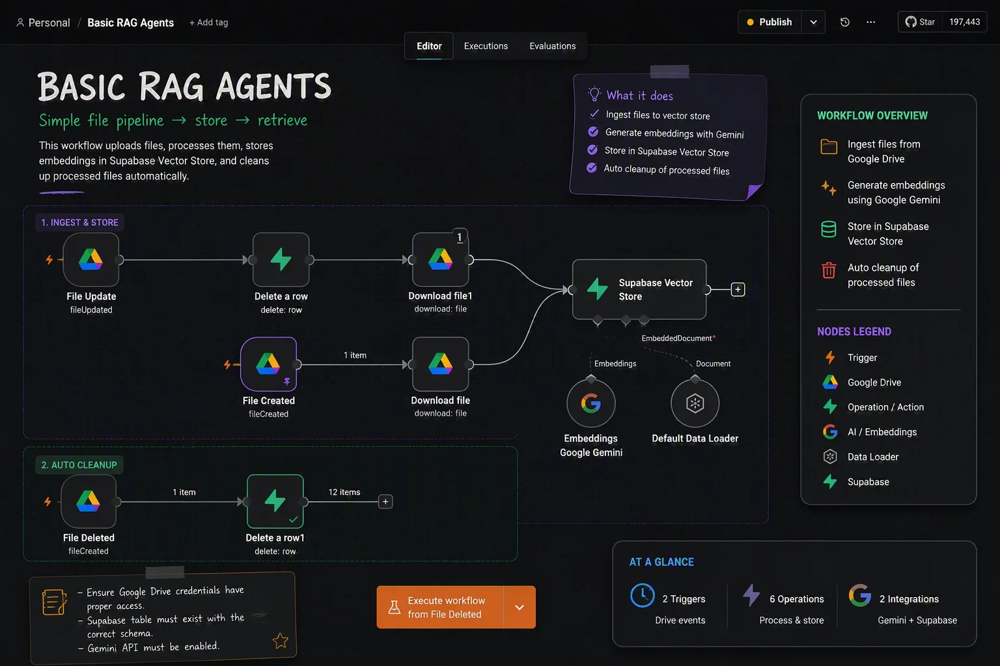

01
Understand
Map the process, stakeholders, data, controls, and real bottlenecks.
I’m Angelo De Ocampo, an AI Automation Specialist building practical systems that connect business processes, data, and intelligent automation.
I bridge complex business processes and cutting-edge technology—designing automated systems that are efficient, compliant, and built to scale.
My foundation in operational auditing gives me a different lens. I don’t just ask whether an automation works. I ask whether it is controlled, traceable, resilient, and ready for the real world.
Map the process, stakeholders, data, controls, and real bottlenecks.
Choose practical tools and create a scalable, human-centered workflow.
Build in validation, audit trails, exception handling, and documentation.
Measure outcomes, remove friction, and evolve the system with the business.
From workflow strategy to implementation and control.
Intelligent workflows that connect tools, decisions, and people.
Purpose-built systems for reporting, analysis, and daily operations.
Automation grounded in controls, compliance, and process excellence.

Captures completed Asana tasks, calls Xero, branches records, builds a report, uploads the result, and clears staging data.

Turns new source files into multiple AI-assisted posts, loops through outputs, and routes content to social channels.

Routes five lead stages through folder creation, reminders, quotations, approval onboarding, and close-out messaging.

Generates structured prompts, authenticates by JWT, creates and monitors videos, converts files, and publishes to two platforms.

Collects email attachments, analyzes content, generates standardized names, files documents, logs records, and sends confirmation.

Ingests Drive files, creates Gemini embeddings, stores them in Supabase Vector Store, and cleans up deleted source records.
Illustrative estimates based on moderate monthly usage and a $10/hour manual-labor benchmark. Actual savings depend on run volume, exception rates, review time, software fees, and API costs.
A career progression from evaluating systems to architecting better ones.
Manuel S. Enverga University Foundation, Inc.
Tell me where the friction is, and I’ll help design a practical automation that saves time, improves consistency, and supports the way your business works.